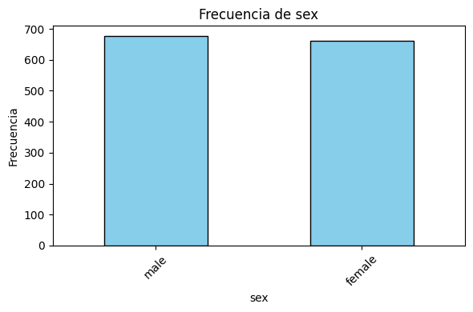
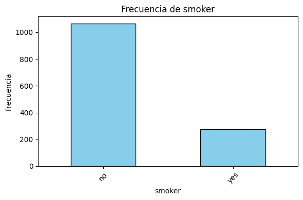
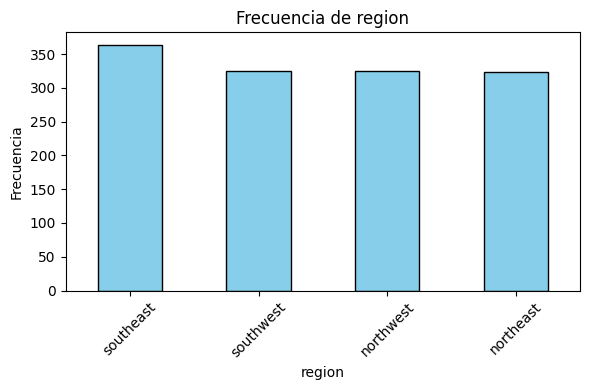
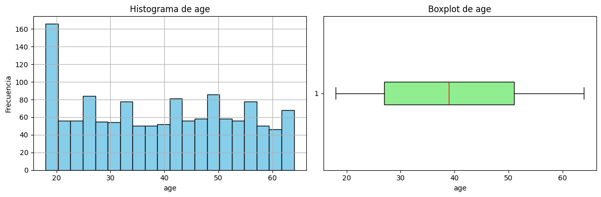
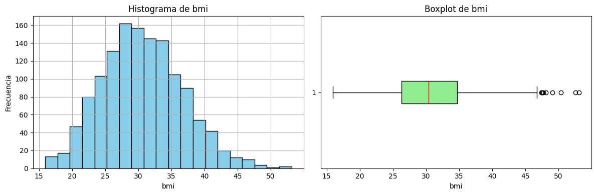
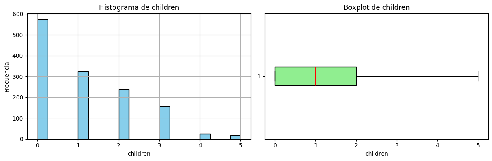
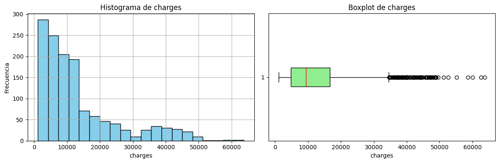

Actividad Data Viz#
Librerias usadas#
import pandas as pd
import matplotlib.pyplot as plt
import numpy as np
from scipy.stats import shapiro, normaltest, kstest
funciones#
def Summary(data, sheet):
print(f"Hoja: {sheet}")
# Crear la tabla de resumen
resumen = {
"Cantidad de filas": data.shape[0],
"Cantidad de columnas": data.shape[1],
"Datos faltantes": data.isnull().sum().sum(),
"Filas duplicadas": data.duplicated().sum()
}
# Convertir el resumen en un DataFrame
ResumenHoja = pd.DataFrame(resumen, index=["Resumen"])
print("\nResumen:")
display(ResumenHoja)
print("\nEncabezado:")
display(data.head())
def analizar_categoricas(df):
resultados = []
# Detectar variables categóricas (object, category o booleanas)
categoricas = df.select_dtypes(include=['object', 'category', 'bool']).columns
for col in categoricas:
conteo = df[col].value_counts(dropna=False)
proporcion = df[col].value_counts(normalize=True, dropna=False)
nulos = df[col].isna().sum()
# Tomamos la categoría más frecuente
categoria_moda = conteo.index[0] if not conteo.empty else None
frecuencia_moda = conteo.iloc[0] if not conteo.empty else None
resultados.append({
"variable": col,
"cantidad_categorias": df[col].nunique(dropna=False),
"categoria_mas_frecuente": categoria_moda,
"frecuencia_mas_frecuente": frecuencia_moda,
"porcentaje_mas_frecuente": proporcion.iloc[0] if not conteo.empty else None,
"nulos": nulos
})
return pd.DataFrame(resultados).sort_values(by="cantidad_categorias", ascending=False)
def Graficar_Categoricas(df, tipo="barra"):
# Detectar variables categóricas
categoricas = df.select_dtypes(include=['object', 'category', 'bool']).columns
resultados = {}
if len(categoricas) == 0:
print("No se detectaron variables categóricas en el DataFrame.")
return
for col in categoricas:
conteo = df[col].value_counts(dropna=False) # incluir NaN si hay
resultados[col] = conteo
if tipo == "barra":
plt.figure(figsize=(6,4))
conteo.plot(kind="bar", color="skyblue", edgecolor="black")
plt.title(f"Frecuencia de {col}")
plt.xlabel(col)
plt.ylabel("Frecuencia")
plt.xticks(rotation=45)
plt.tight_layout()
plt.show()
elif tipo == "pastel":
plt.figure(figsize=(6,6))
conteo.plot(kind="pie", autopct='%1.1f%%',
colors=plt.cm.Set3.colors, startangle=90)
plt.title(f"Distribución de {col}")
plt.ylabel("")
plt.tight_layout()
plt.show()
else:
raise ValueError("El parámetro 'tipo' debe ser 'barra' o 'pastel'.")
return resultados
def resumen_numericas(df):
# Seleccionar columnas numéricas
numericas = df.select_dtypes(include=['int64', 'float64', 'int32', 'float32']).columns
if len(numericas) == 0:
print("No se detectaron variables numéricas en el DataFrame.")
return None
# Usamos describe() y agregamos info adicional
resumen = df[numericas].describe().T # Transpuesto para mayor claridad
resumen["varianza"] = df[numericas].var()
resumen["mediana"] = df[numericas].median()
return resumen
def graficar_numericas(df):
# Detectar variables numéricas
numericas = df.select_dtypes(include=['int64', 'float64', 'int32', 'float32']).columns
if len(numericas) == 0:
print("No se detectaron variables numéricas en el DataFrame.")
return
for col in numericas:
plt.figure(figsize=(12,4))
# Histograma
plt.subplot(1,2,1)
df[col].hist(bins=20, color="skyblue", edgecolor="black")
plt.title(f"Histograma de {col}")
plt.xlabel(col)
plt.ylabel("Frecuencia")
# Boxplot
plt.subplot(1,2,2)
plt.boxplot(df[col].dropna(), vert=False, patch_artist=True,
boxprops=dict(facecolor="lightgreen", color="black"),
medianprops=dict(color="red"))
plt.title(f"Boxplot de {col}")
plt.xlabel(col)
plt.tight_layout()
plt.show()
def detectar_outliers(df):
resultados = []
# Detectar variables numéricas
numericas = df.select_dtypes(include=[np.number]).columns
for col in numericas:
serie = df[col].dropna()
if len(serie) == 0:
continue
# Cuartiles
q1 = serie.quantile(0.25)
q3 = serie.quantile(0.75)
iqr = q3 - q1
# Límites para outliers
lim_inf = q1 - 1.5 * iqr
lim_sup = q3 + 1.5 * iqr
# Detección
outliers = ((serie < lim_inf) | (serie > lim_sup)).sum()
total = len(serie)
resultados.append({
"variable": col,
"n_muestras": total,
"outliers": outliers,
"proporcion_outliers": outliers / total if total > 0 else np.nan
})
return pd.DataFrame(resultados).sort_values(by="proporcion_outliers", ascending=False)
def prueba_normalidad(df, alpha=0.05):
resultados = []
# Detectar variables numéricas
numericas = df.select_dtypes(include=[np.number]).columns
for col in numericas:
serie = df[col].dropna()
if len(serie) < 8: # muy pocas muestras → no confiable
resultados.append({
"variable": col,
"n_muestras": len(serie),
"shapiro_p": np.nan,
"dagostino_p": np.nan,
"ks_p": np.nan,
"es_normal (alpha=0.05)": "Muestra insuficiente"
})
continue
# Shapiro-Wilk (solo si n <= 5000, más grande no recomendado)
stat_shapiro, p_shapiro = shapiro(serie) if len(serie) <= 5000 else (np.nan, np.nan)
# D’Agostino y Pearson
stat_dagostino, p_dagostino = normaltest(serie)
# Kolmogorov-Smirnov contra normal estándar
stat_ks, p_ks = kstest(
(serie - serie.mean()) / serie.std(ddof=0), 'norm'
)
# Veredicto final
es_normal = (
(np.isnan(p_shapiro) or p_shapiro > alpha) and
(p_dagostino > alpha) and
(p_ks > alpha)
)
resultados.append({
"variable": col,
"n_muestras": len(serie),
"shapiro_p": p_shapiro,
"dagostino_p": p_dagostino,
"ks_p": p_ks,
"es_normal (alpha=0.05)": es_normal
})
return pd.DataFrame(resultados).sort_values(by="es_normal (alpha=0.05)", ascending=False)
Cargado de datos y exploraciones iniciales#
df = pd.read_csv("https://raw.githubusercontent.com/stedy/Machine-Learning-with-R-datasets/master/insurance.csv")
Summary(df,"Datos")
Hoja: Datos
Resumen:
| Cantidad de filas | Cantidad de columnas | Datos faltantes | Filas duplicadas | |
|---|---|---|---|---|
| Resumen | 1338 | 7 | 0 | 1 |
Encabezado:
| age | sex | bmi | children | smoker | region | charges | |
|---|---|---|---|---|---|---|---|
| 0 | 19 | female | 27.900 | 0 | yes | southwest | 16884.92400 |
| 1 | 18 | male | 33.770 | 1 | no | southeast | 1725.55230 |
| 2 | 28 | male | 33.000 | 3 | no | southeast | 4449.46200 |
| 3 | 33 | male | 22.705 | 0 | no | northwest | 21984.47061 |
| 4 | 32 | male | 28.880 | 0 | no | northwest | 3866.85520 |
df.info()
<class 'pandas.core.frame.DataFrame'>
RangeIndex: 1338 entries, 0 to 1337
Data columns (total 7 columns):
# Column Non-Null Count Dtype
--- ------ -------------- -----
0 age 1338 non-null int64
1 sex 1338 non-null object
2 bmi 1338 non-null float64
3 children 1338 non-null int64
4 smoker 1338 non-null object
5 region 1338 non-null object
6 charges 1338 non-null float64
dtypes: float64(2), int64(2), object(3)
memory usage: 73.3+ KB
observamos que todos los datos estan correctamente cargados y notamos ausencia de datos nulos
Analisis descriptivo(EDA)#
analizar_categoricas(df)
| variable | cantidad_categorias | categoria_mas_frecuente | frecuencia_mas_frecuente | porcentaje_mas_frecuente | nulos | |
|---|---|---|---|---|---|---|
| 2 | region | 4 | southeast | 364 | 0.272048 | 0 |
| 0 | sex | 2 | male | 676 | 0.505232 | 0 |
| 1 | smoker | 2 | no | 1064 | 0.795217 | 0 |
Graficar_Categoricas(df)



{'sex': sex
male 676
female 662
Name: count, dtype: int64,
'smoker': smoker
no 1064
yes 274
Name: count, dtype: int64,
'region': region
southeast 364
southwest 325
northwest 325
northeast 324
Name: count, dtype: int64}
resumen_numericas(df)
| count | mean | std | min | 25% | 50% | 75% | max | varianza | mediana | |
|---|---|---|---|---|---|---|---|---|---|---|
| age | 1338.0 | 39.207025 | 14.049960 | 18.0000 | 27.00000 | 39.000 | 51.000000 | 64.00000 | 1.974014e+02 | 39.000 |
| bmi | 1338.0 | 30.663397 | 6.098187 | 15.9600 | 26.29625 | 30.400 | 34.693750 | 53.13000 | 3.718788e+01 | 30.400 |
| children | 1338.0 | 1.094918 | 1.205493 | 0.0000 | 0.00000 | 1.000 | 2.000000 | 5.00000 | 1.453213e+00 | 1.000 |
| charges | 1338.0 | 13270.422265 | 12110.011237 | 1121.8739 | 4740.28715 | 9382.033 | 16639.912515 | 63770.42801 | 1.466524e+08 | 9382.033 |
graficar_numericas(df)




notamos presencia de datos atipicos para cada variable numerica gracias a la grafica de los boxplots
detectar_outliers(df)
| variable | n_muestras | outliers | proporcion_outliers | |
|---|---|---|---|---|
| 3 | charges | 1338 | 139 | 0.103886 |
| 1 | bmi | 1338 | 9 | 0.006726 |
| 0 | age | 1338 | 0 | 0.000000 |
| 2 | children | 1338 | 0 | 0.000000 |
analisis de normalidad
prueba_normalidad(df)
| variable | n_muestras | shapiro_p | dagostino_p | ks_p | es_normal (alpha=0.05) | |
|---|---|---|---|---|---|---|
| 0 | age | 1338 | 5.692047e-22 | 0.000000e+00 | 1.024186e-07 | False |
| 1 | bmi | 1338 | 2.604684e-05 | 1.521378e-04 | 3.145398e-01 | False |
| 2 | children | 1338 | 5.066437e-36 | 8.457893e-33 | 1.631424e-72 | False |
| 3 | charges | 1338 | 1.150523e-36 | 7.019808e-74 | 4.393057e-42 | False |